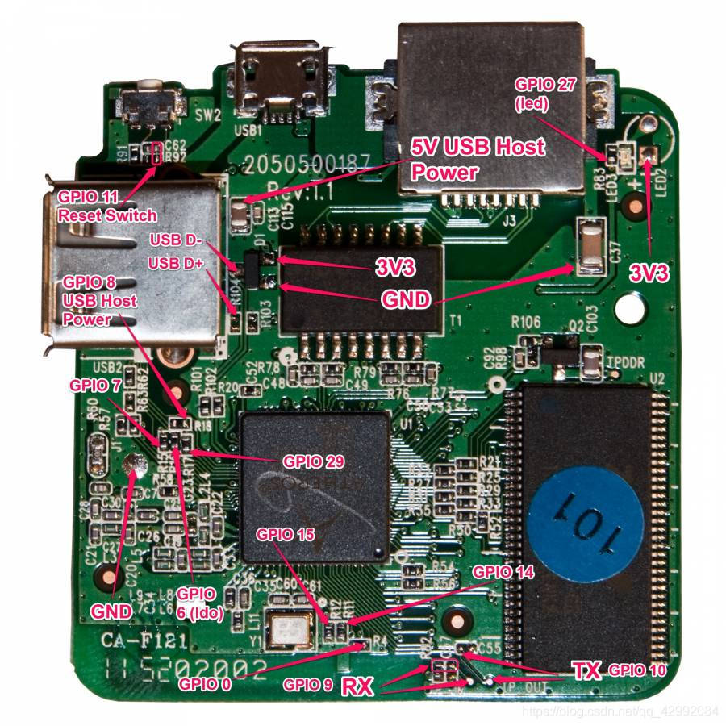
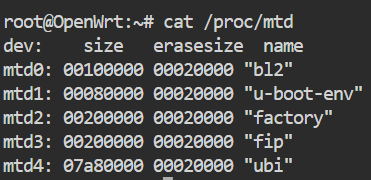
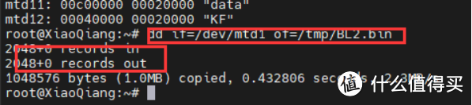
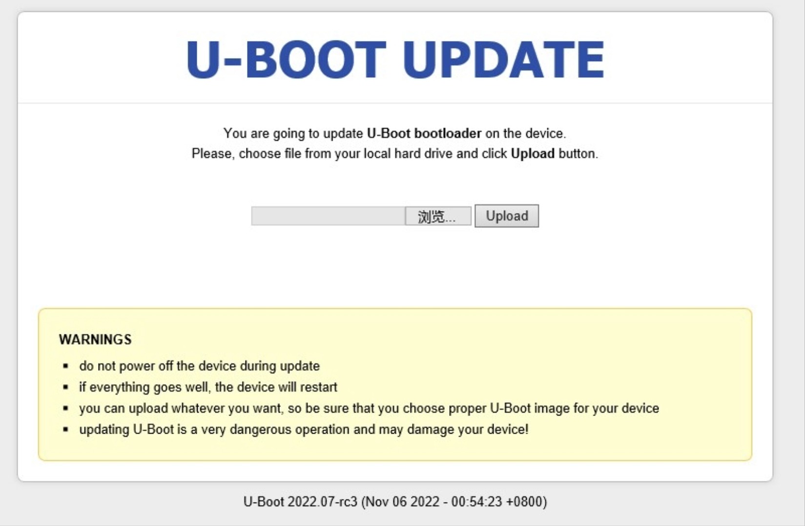
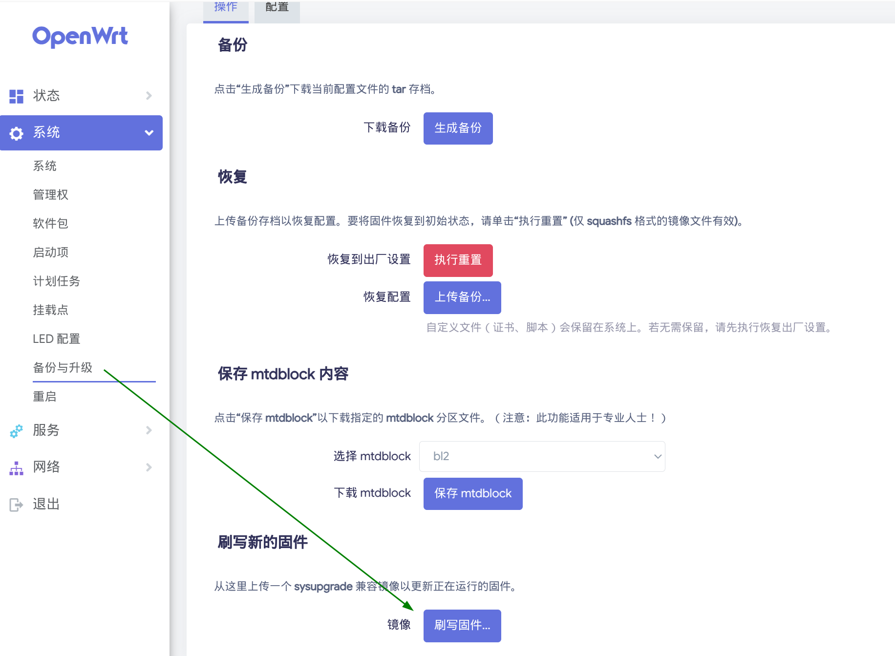

硬路由（1）—— 概述 & OpenWrt 安装
概述
以下我们涉及的均为主路由的配置部分。除主路由功能外，还有两种常见的功能：
- 旁路由（旁路网关）：本质上是一个通过 LAN 口与主路由连接的一个客户端设备，管理挂靠在主路由网络下的一个旁系网络，分担一部分路由器的功能。
- 单臂路由：在路由器的一个接口上通过配置子接口（逻辑接口）的方式，实现原来相互隔离的不同 VLAN 之间的互联互通。
与软路由相比，硬路由有着为路由组网功能特化的硬件。特别是在满足日常需求的条件下，硬路由的性价比要远高于软路由。（除非你手头上刚好有一台闲置的机器，且有双网口）
LeSnow：当然，虽然 OpenWrt 只需要最低 16MB RAM 即可运行，但过低的配置则会大大限制 OpenWrt 的功力，尤其是想实现科学上网，那么性能（RAM 和 算力）是务必需要考虑的。常见的家用路由为了节约成本，硬件性能能省就省，可不会考虑到用户还可能刷个机跑个 clash、xray 啥的。此外，OpenWrt 作为开源系统，对于很多硬件平台的优化是不如原厂系统的。（所以也会看到一些打包了闭源驱动的 OpenWrt 魔改版本）因此，就算一台家用路由器可以刷入 OpenWrt，一些服务（如科学上网）也是无法跑起来的，就算能跑起来，带宽也可能跑不满，也不一定稳定。（你也不希望出差在外突然机器失联叭）
笔者于 2024 年 6 月在 pdd 平台购入了一台小米 AX3000T 路由器，花费 140.1 元。它采用了 Filogic 820 平台，虽然不支持 Wi-Fi 7，但对于笔者学校宿舍的有线百兆环境来说完全足够。在配置过程当中，笔者发现了它的很多问题，因此暂时不推荐这台机器。详见Tricks & 组网图景。笔者于 2025 年 3 月又购入了一台磊科 N60 Pro 路由器，花费 299.5 元，用于替换之前的路由器，仍在测试稳定性。
LeSnow：AX3000T / N60 Pro 在刷机上的方便之处：可以直接 SSH，不用 TTL
LeSnow：另一款推荐的硬路由为 RAX3000M，刷机教程也很多，详见感谢 Wi-Fi7，让移动定制路由器也可以很香！错过90多元的RAX3000M 普通版，135元入坑RAX3000M算力版！
对于支持刷机的硬路由设备，我们可以刷入如 OpenWrt 一类的嵌入式设备操作设备，实现路由器端广告屏蔽、科学上网等高级功能。
准备工作
- SCP 软件：用于上传 Uboot 文件以及下载备份文件，如 WinSCP。
- SSH 软件：用于连接路由器终端。
- TFTP 软件：用于上传 Initramfs.itb 文件进行第一次刷入，如 Tftpd64。
TTL
TTL 刷机的方法较为复杂，主要是需要拆开路由器，通过焊接的方式引出 RX（接收）、TX（发送）以及 GND（接地）线，再通过编程器与电脑上的软件进行通信，刷入 Uboot。

（解锁）SSH
如果路由器出厂支持 SSH 访问，或是能通过某种方式解锁 SSH，那么我们就可以直接通过 MTD 向 Flash 中写入 Uboot 并擦除原厂固件。
存储器技术设备（Memory Technology Device，MTD），是 Linux 系统中设备文件系统的一个类别，主要用于闪存的应用，是一种闪存转换层（Flash Translation Layer，FTL）。创造 MTD 子系统的主要目的是提供一个介于闪存硬件驱动程序与高阶应用程序之间的抽象层。
请自行在网络上查询有关解锁自己路由器 SSH 的办法。
备份分区（很重要，一定要备份！！！）
SSH 连接成功后输入cat /proc/mtd查看固件分区信息。

备份所有分区。
- 踩坑记录：不要一次性备份所有文件。路由器的存储空间可能不够。可以先备份两三个文件，再从
/tmp目录拷出，最后删除备份文件，继续备份。有的文件比较大，备份时间比较长，请耐心等待。
1 | dd if=/dev/mtdx of=/tmp/mtdx_xxx.bin |

出现 in 与 out 提示则说明备份成功。将备份文件从/tmp目录拷贝出来后删除。
刷入 / 更换 Uboot
第一次刷入
使用 WinSCP 上传 Uboot 文件到路由器/tmp目录，输入下面命令写入新的 Uboot：
1 | mtd write /tmp/u-boot.bin FIP |
注意：指令最后的 FIP 一定要加上，用于指定 mtd 写入分区，否则路由器会变砖！！！
注意：上面命令执行结束前，确保不要断电，否则路由器会变砖！！！
输入下面命令擦除官方固件并重启：
1 | mtd erase /dev/mtdx # mtdx 为存储官方固件的分区，在 /proc/mtd 中显示为 ubi |
后续更换 Uboot
将路由器断电。长按路由器 Reset 键时上电启动，保持 Reset 键不放十秒钟左右，使路由器进入 Uboot。
电脑网线连接到路由器 LAN 口后，设置网卡为静态IP：
1 | IP 地址：192.168.1.254 |
浏览器打开http://192.168.1.1/uboot.html进入 Uboot 上传界面：

在这里上传...uboot.fip文件即可
刷入 / 更换 OpenWrt
刷入 InitramFS 镜像
第一次刷入 Uboot 并擦除官方固件重启后，路由器会自动进入 Uboot。
电脑网线连接到路由器 LAN 口后，设置网卡为静态IP：
1 | IP 地址：192.168.1.254 |
打开 Tftpd64，打开保存...initramfs-recovery.itb的文件夹，选择连接路由器的网卡，会自动上传。上传完成后，路由器会自动重启，不要断电，将网卡重新恢复到 DHCP 模式，稍等片刻。
待网卡获取到 IP 地址后，打开浏览器地址栏输入openwrt/即可进入路由器管理页面。使用root账户登录，初始密码为空。此时是将 OpenWrt 刷入了内存中，我们还需要遵循以下步骤以将系统刷入 Flash 中。
从已有的 OpenWrt 升级 / 更换
在 LuCI 界面，选择系统 - 备份与升级 - 刷写固件：

在这里上传...squashfs-sysupgrade.itb文件即可。
在更换 OpenWrt 镜像前，请确认其与当前 Uboot 是否兼容。
下一章节：系统调优 & 局域网组网